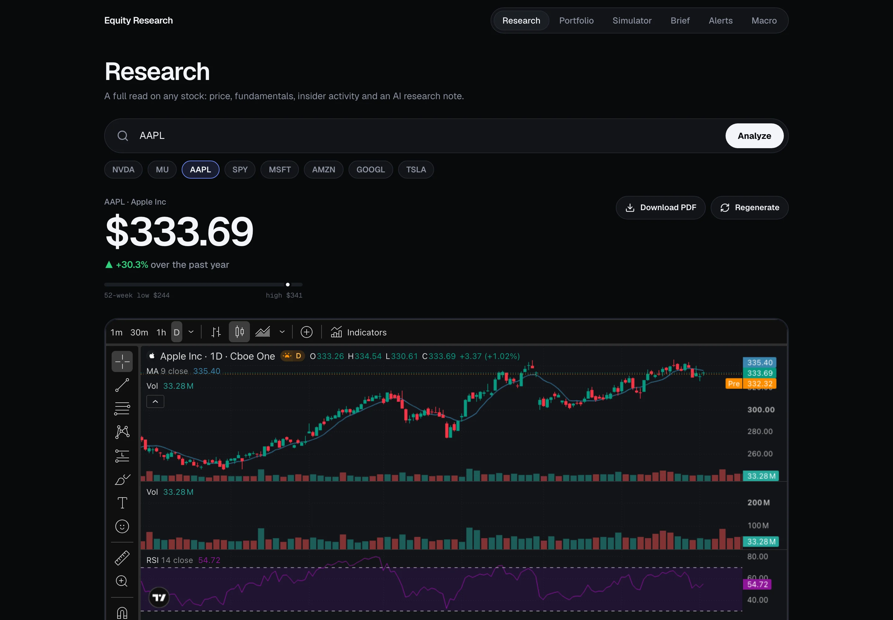
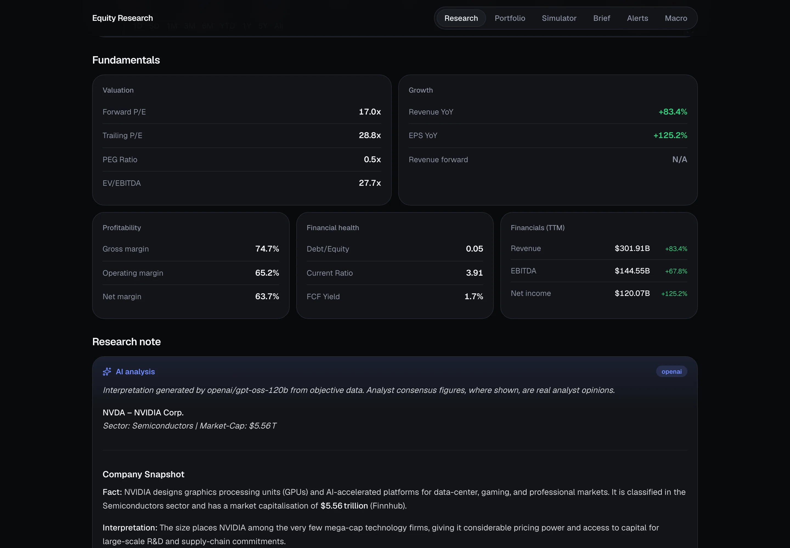
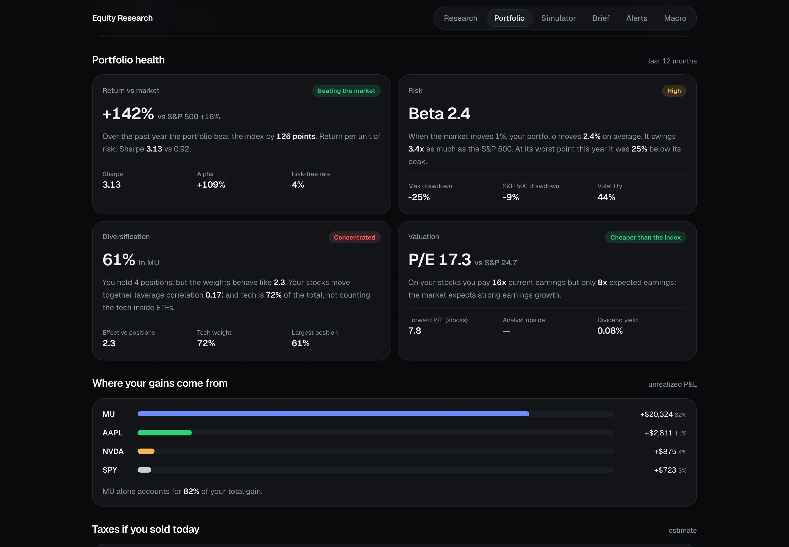
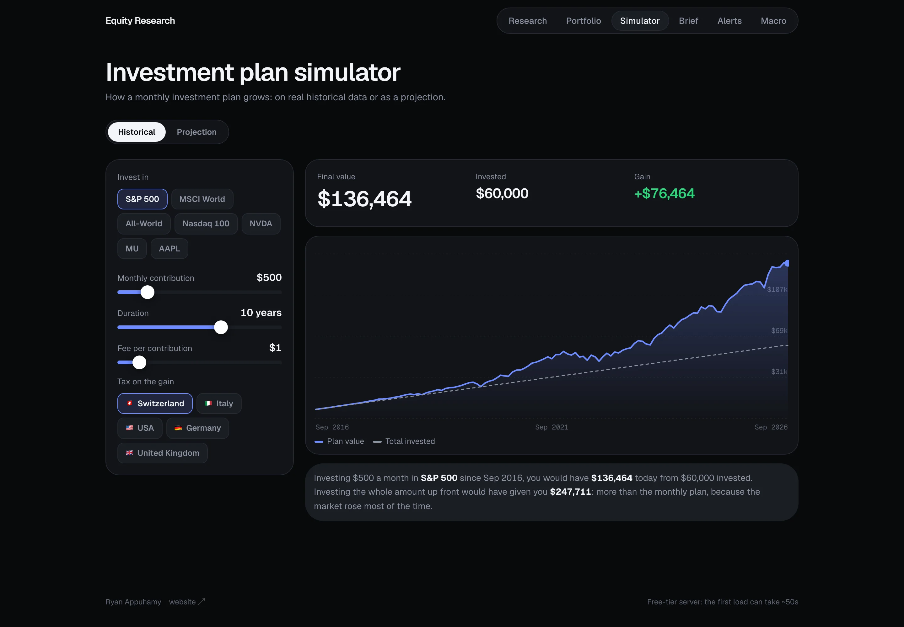
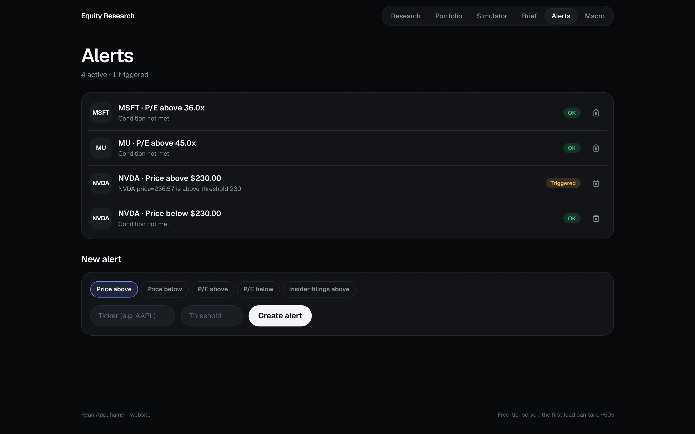
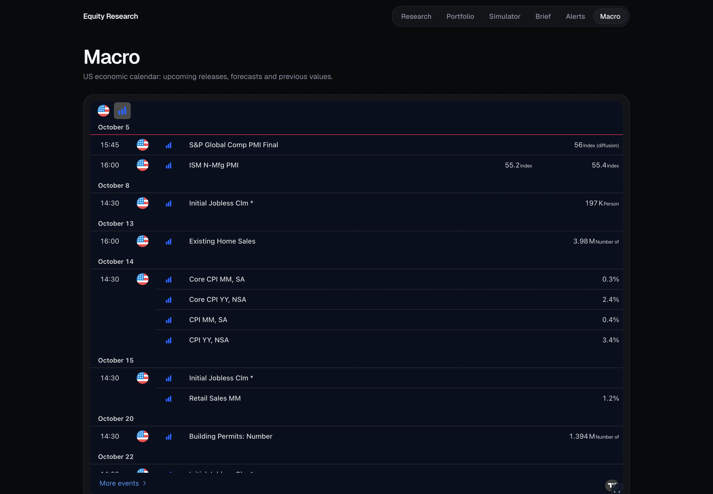

An equity research tool I built for my own investing.
I wanted proper research on the stocks I hold without paying for a terminal, so I built it on free, official data: SEC filings, FRED and reported financials.

Fact and interpretation, kept apart
Numbers from APIs and filings are stored as-is. The AI note is labelled, attributed, and instructed never to reference a figure that isn't in the input. Template output takes over if no model is reachable.
- Six metric cards: valuation, growth, profitability, financial health, TTM financials
- Insider transactions parsed from raw Form 4 XML: name, role, buy / sell, size, date
- Earnings guidance pulled from the 8-K. The legal boilerplate is trimmed first, so the forward outlook survives the token budget

One request, a seven-step pipeline
Every ticker lookup runs the same ordered workflow. Each step fails gracefully (a missing source returns a note, never a broken report) and results are cached in Postgres, so a repeat lookup is free.
- 1Price history & stats
- 2Fundamentals
- 3Peer comparison
- 4SEC insider activity
- 5Transcript + AI read
- 6Analyst consensus & macro
- 7AI research note
| Source | Cost | What it provides |
|---|---|---|
| SEC EDGAR | free | Form 4 insider filings and 8-K earnings exhibits, the institutional layer most retail tools skip |
| yfinance | free | Daily prices, portfolio quotes, fallback fundamentals |
| Finnhub | free tier | Live quotes, analyst trends, earnings calendar, company news and IP-independent fundamentals for when cloud hosts get blocked |
| FRED | free | Fed funds rate, 10-year yield, CPI, unemployment |
| Gemini → Groq → Claude | free-first | Research notes and weekly briefs. The chain only reaches a paid model if both free tiers fail |
Your portfolio, read like a fintech app
Live prices and P&L, with the number that matters first and the detail one tap away.
- Scrubbable value chart vs the S&P 500 and other indices
- Portfolio health: return, risk, diversification and valuation, each in one plain sentence
- Tax if you sold today, by country
- Honest about the chart: it's a backtest of current holdings


What a monthly investment plan really does
A dollar-cost-averaging simulator on 15 years of real monthly prices, for index ETFs or any stock you hold.
- Historical mode vs a Monte Carlo projection (10th to 90th percentile)
- Fees, inflation and capital-gains tax by country

Metric rules, checked against the live pipeline
Price, P/E, revenue-growth or insider-filing thresholds. The list loads instantly; the condition check runs in the background and fills in the status in place.
- Each alert reads as one line ("NVDA · Price above $230.00") with an OK or Triggered badge, so what needs attention is visible at a glance

The week's data releases, in context
A dedicated view of upcoming US economic events: the releases the weekly brief keeps naming as near-term risks.
- Actual vs. forecast for ISM, JOLTS, non-farm payrolls, CPI and more

An educational project, not financial advice. Every number is traceable to a primary source (SEC EDGAR, FRED, reported financials); analyst figures are passed through with attribution.